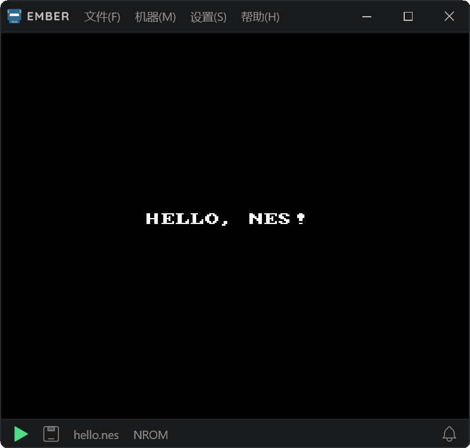
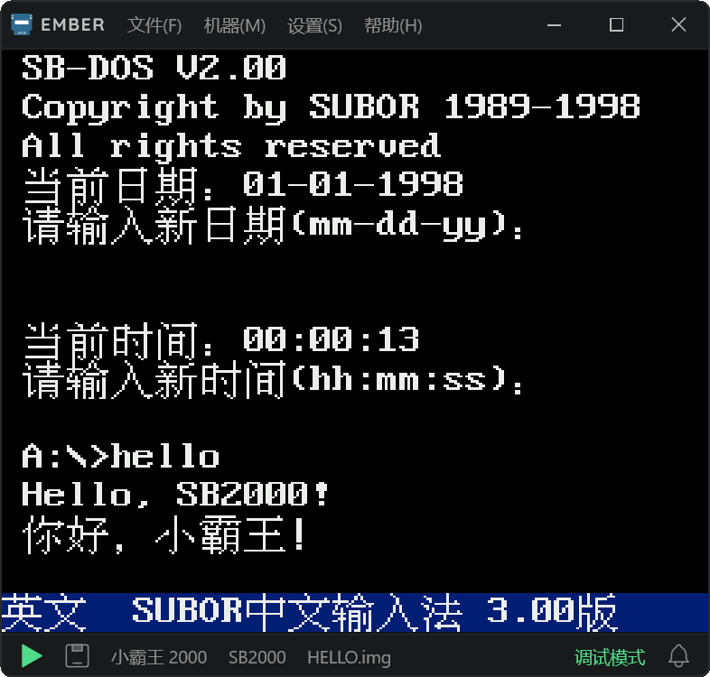
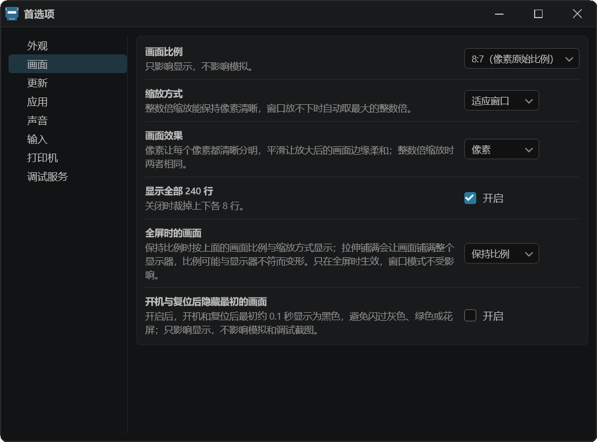
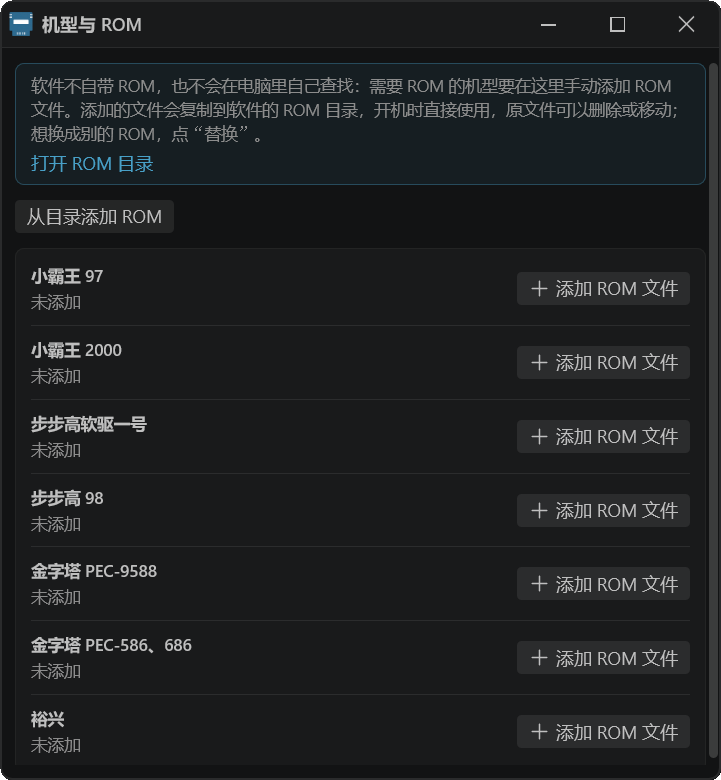
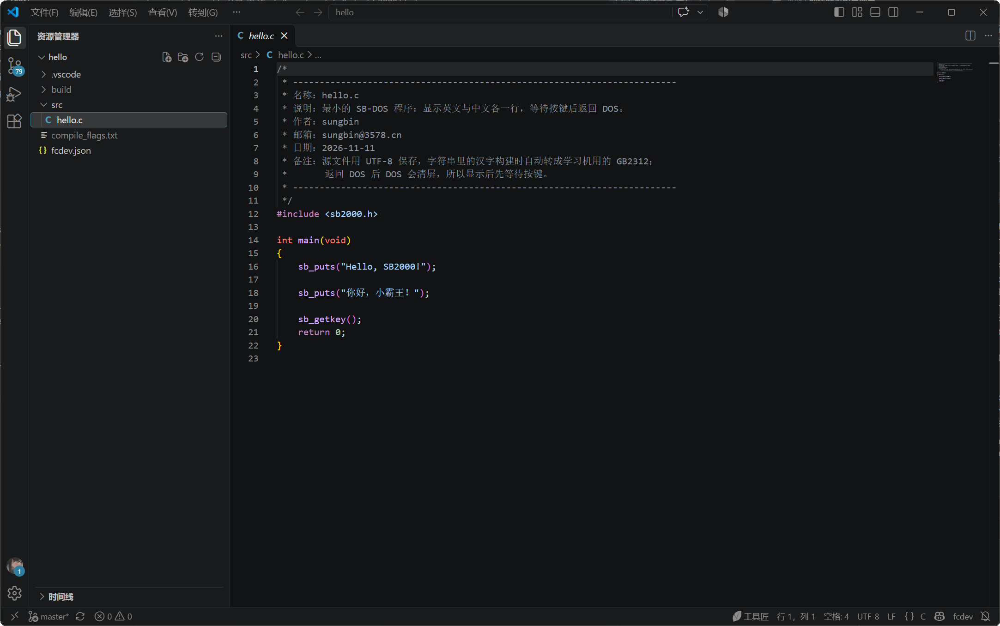
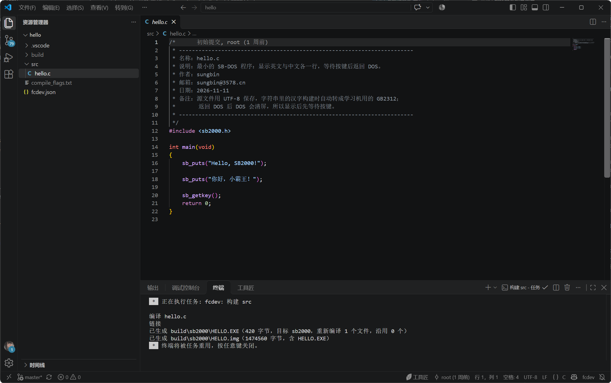

FC · 学习机 · 6502
Ember 模拟器与 fcdev 开发工具
Ember 运行 NES 卡带与学习机整机，带有调试服务、断点、单步与截图。fcdev 是配套的 VS Code 扩展，用 cc65 把 C 或汇编构建成程序，并在 Ember 里运行与调试。
- 帮助文档
- 51 页
- 发布方式
- 解压即用
- 适用系统
- Windows 7 SP1 至 11（64 位）

模拟器
Ember 模拟器
Ember 是 FC 与学习机的模拟器。NES 卡带靠 mapper 插件描述映射，学习机按整机机型运行，两者共用同一套调试服务。
运行 NES 卡带
学习机整机
调试服务
mapper 插件
画面与声音
Windows 原生



开发者工具
fcdev：VS Code 扩展
fcdev 是面向开发者的 VS Code 扩展，支持 NES 与 SB2000（小霸王学习机）程序的开发。它与 Ember 直接连通，构建完的程序一键就能在模拟器里运行与调试。
新建与构建
运行与调试
C 与汇编
反汇编
Copilot 工具
手册与参考


帮助文档
整套帮助文档
左侧导航可以直接跳到任何一页，版本变化见使用说明里的更新记录。